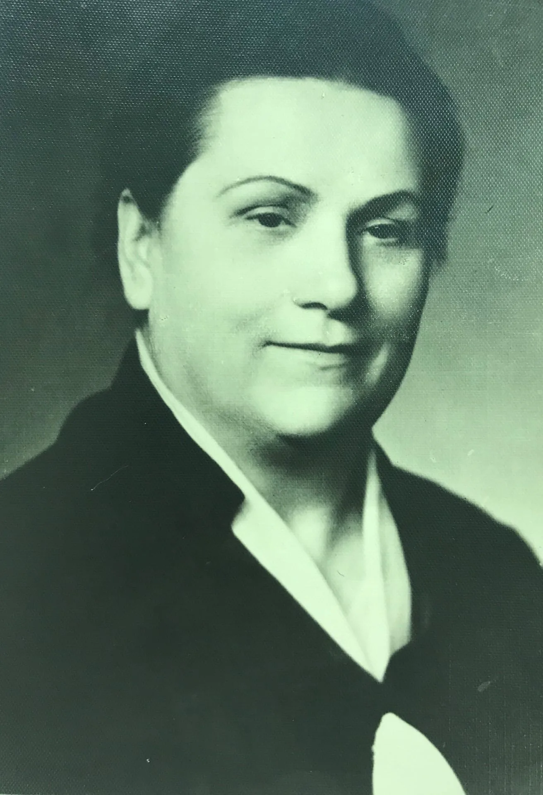

Полина Сергеевна Портнова
—
Памяти Полины Сергеевны Портновой посвящается
Беда пришла войною страшной,
устой нарушив городской,
и подвиг женщины отважной
остался в памяти людской.
Пылал весь город и малюток
пришлось в бомбёжку собирать.
Спасти! Нельзя оставить!
Было легко решение принять.
И боль, и страх превозмогая,
уберегли детей назло судьбе.
А в сердце была цель святая:
Всё ради жизни на земле!